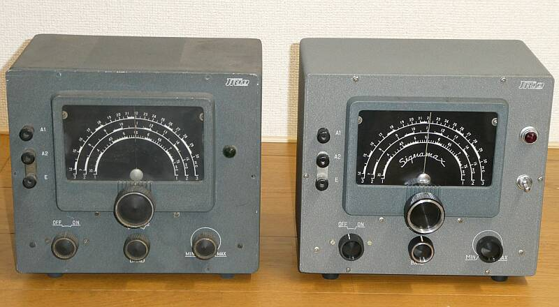
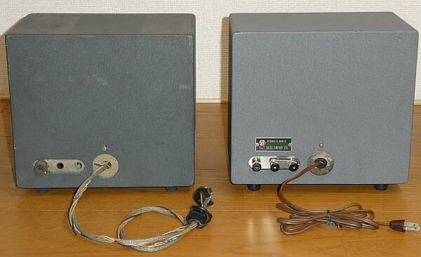

ＴＲＩＯから発売されたプリセレクタ―です、ＳｉｇｎａＭａｘとも称されていました
手元の資料では、１９６１年（昭和３６年）３月発売 ￥８，７００ とあります
９Ｒ-５９ と同じ発売時期です

写真左が、ＪＡモデル 右が、ＵＳモデル |
本機は、いわゆるプリ・セレクタで、受信機に後付けで接続して使う、いわば後付けの高周波増幅装置です
プリアンプとして、特にハイ・バンドで受信機の感度を補う目的と、あと同調段を増やす（高周波段の選択度を高める）ことで、イメージ混信の低減の２つが大きな目的です
親機がシングル・スーパー・ヘテロダインの場合、ハイ・バンドにあっては、それら以上に局発の安定度が大きな問題になります
後継機であるプリ・コンと呼ばれたＳＭ-５や、ＳＭ-５Ｄを見ると、コンバータの様相が濃くなっています
１ｓｔＩＦを３．５～５．２ＭＨｚにした、コリンズ・タイプのダブル・スーパーに変身させる目的です
※ＳＭ-５：７ＭＨｚ帯は、コンバートの対象外 |
|
 |
背面を見ると分かりますが、ＪＡモデルは、電源を内蔵していません
親受信機から、必要な電源の供給を受けて使用します
９Ｒ-５９は、５ＰのＵＹなのですが、ここにあるものはＵXプラグ（４P)がついています（破損したまま！）
一方、ＵＳモデルは、電源を内蔵させてあります
関係して電源ＳＷが追加されています
国内では、当時大ヒットした９Ｒ-５９の専用オプションのひとつとして安価に
ＵＳでは、対応する受信機を選ばずに使用できるように汎用性を持たせる
・・・だと思われます。
アンテナ端子ですが、ＪＡモデルはＭ-Ｒに改造されています
本来、陸式ターミナル３つです（ＵＳモデルの通り）
ＵＳモデルは、普通に動作します
同じ時期の製品だと思いますが、保管の条件・・・日本は高温多湿、北米は低湿度
この違いが、大きく見栄えに（動作も？）差を生じています
ＪＡモデルは、ＵＹプラグを交換してからの動作チェックです
内部の様子などは、後日・・・・・ |
|
６ＢＡ６による高周波増幅段に、同じく６ＢＡ６によるカソード・フォロワ１段の２球構成です
ダイヤル表示の通り、３バンドに分割して、３．５～３０ＭＨｚをカバーします |
|
|